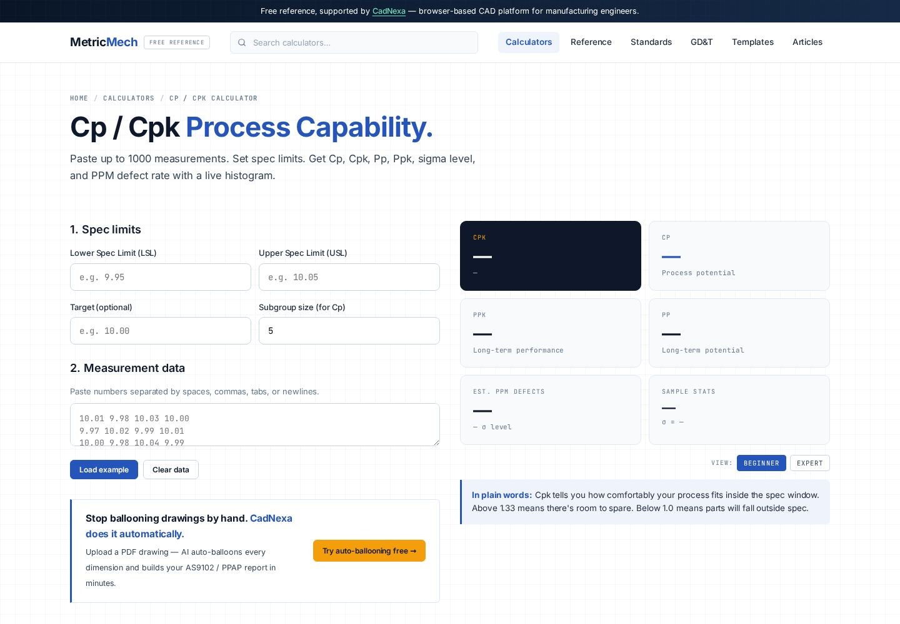

Cp vs Cpk explained: process capability made simple.
Cp and Cpk both tell you whether a process can hold a tolerance — but only one of them notices when the process drifts off-center. Get the difference, the formulas, and the numbers your customer expects, in plain language.

What process capability actually measures
Capability compares the spread of your process to the width of the tolerance. If your parts vary far less than the tolerance allows, you are capable; if the variation eats most of the tolerance, you are not. Cp and Cpk put a number on that.
The Cp formula
Cp is the simple ratio of tolerance width to process spread:
Cp = (USL − LSL) / (6σ)
USL and LSL are the upper and lower specification limits; 6σ is six times the process standard deviation (roughly the full natural spread). A Cp of 1.0 means the process spread exactly fills the tolerance — cutting it fine. The catch: Cp assumes the process is perfectly centered, which it rarely is.
The Cpk formula
Cpk fixes that blind spot by measuring the distance from the process mean to the nearest spec limit:
Cpk = min[ (USL − mean) / 3σ , (mean − LSL) / 3σ ]
Because it takes the worse of the two sides, Cpk drops as the process drifts off-center, even if the spread is unchanged. That is why customers ask for Cpk, not Cp.
Cp vs Cpk: a quick example
Tolerance 10.00 ±0.10 mm (USL 10.10, LSL 9.90), σ = 0.025 mm. Cp = 0.20 / 0.15 = 1.33 either way. But if the mean sits at 10.05 instead of 10.00, Cpk = (10.10 − 10.05) / (3 × 0.025) = 0.67 — capable on paper (Cp 1.33), failing in reality (Cpk 0.67). The part is drifting toward the upper limit.
Target values your customer expects
| Cpk | Meaning | Typical use |
|---|---|---|
| < 1.00 | Not capable — expect rejects | Action required |
| 1.33 | Capable — the common minimum | Most automotive / general |
| 1.67 | High capability | Safety / critical characteristics |
| 2.00 | Six Sigma level | World-class processes |
Run your own numbers in the free Cp/Cpk calculator — paste your measurements and it returns Cp, Cpk, and a capability chart.
Common mistakes
FAQ
What is a good Cpk value?
1.33 is the common minimum for capability; 1.67 or higher is expected for safety-critical characteristics. Below 1.00 the process will produce out-of-spec parts.
Why is Cpk lower than Cp?
Cp ignores centering; Cpk penalizes any shift of the mean away from the target. If the process is perfectly centered, Cp and Cpk are equal.
How many samples do I need?
Use at least 30 measurements from a stable process; more is better. Small samples give unreliable estimates of σ.
Does Cpk relate to PPAP?
Yes. PPAP's initial process studies element typically requires capability evidence, often Cpk ≥ 1.33 on significant characteristics.
Where do the measurements come from?
From inspecting each characteristic on the drawing. Auto-balloon the drawing first with CadNexa's Smart Detect, then measure against each ballooned characteristic.